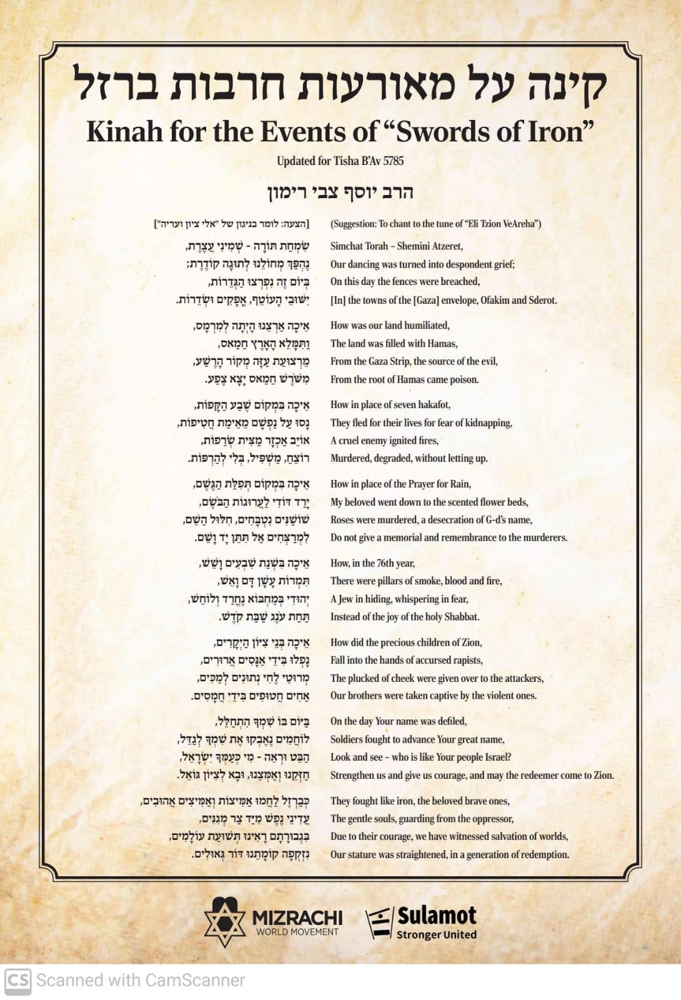

Tisha B'Av Media Collection
A curated list of resources, videos, and images for Tisha B'Av.
üì∫ Videos
- Finding Mashiach - Berel Solomon The meaning of Tisha B'Av, and common questions üÜì
-
Hidden Light - Rabbi Yoel Gold ‚Äî UNCOVERING ROME'S MOST GUARDED SECRET üí≤

-
The Mourning After - Feat. Shai Graucher
— Stories from October 7th

üéß Podcasts
HISTORY FOR THE CURIOUS - RABBI AUBREY HERSH

üìÉ Other Resources
Kinah for the Events of "Swords of Iron"


Cemetery Opening Times for Tisha B'Av - August 3, 2025
- 27 Alderney Road, London E1 4EG: 11am - 3pm
- Braddy Street E1 5PS: 11am - 3pm
- Lauriston Road E9 7HU: 11am - 3pm
- East Ham Marallow Road E5 3QG: 9am - 5pm
- Willlesden Beaconenfield Road NW110 2JE: 9am - 5pm
- Plashet High Street North E12 2PQ: 11am - 3pm
- Edmonton Montagu Road R18 2NF: 9am - 4:30pm
- Enfield Carterharthch Lane EN14 4BG: 8am - 6pm
- Cheshhum Goffs Oak EN7 5JE: 8am - 6pm
- Westerm Bulls Cross Ride EN7 5HT: 8am - 4pm
- Walthham Abbey EN9 9QZ: 9am - 5pm
- Bushey Little Bushey Lane WDD23 3TP: 9am - 5pm
- Brentwood Cocktie Green Kever Achim: All Day
- Satmar Rainhamma La38nd40 42 3ER: All Day
- Streatham 3 Rowan Road SW16 5JF: 8am - 4pm
- West Ham Buckingham Road E15 5SP: 11am - 3pm
- Hopp Lane NW obtuse11 7NL: 8:30am - 3:45pm
- Edgeware Edgewarebury Lane HA8 8QP: 8am - 4:45pm
üñºÔ∏è Memes